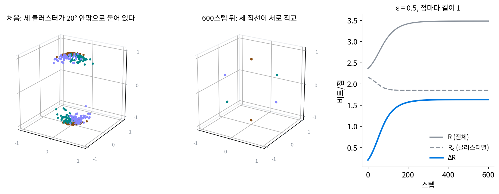
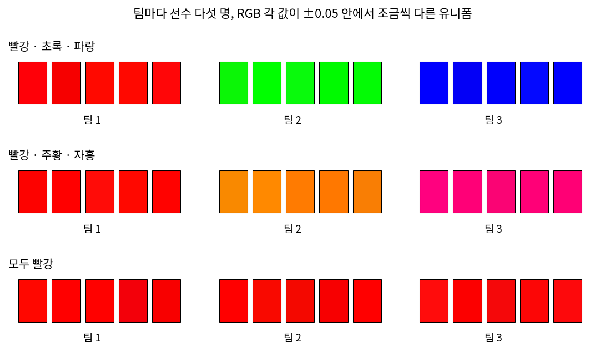
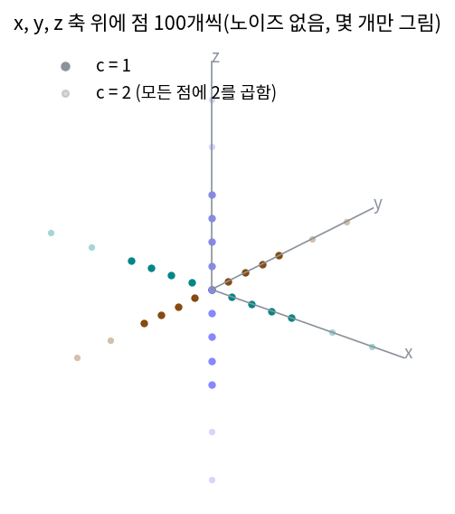
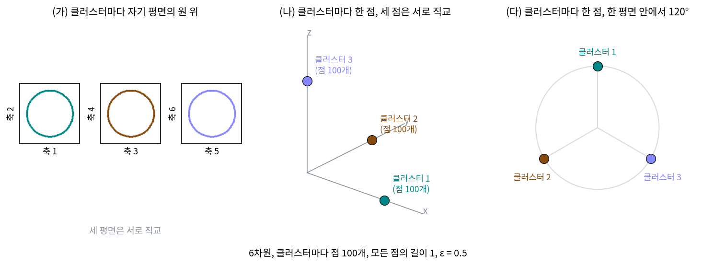

코딩 레이트와 코딩 레이트 감소: 클러스터별로 적으면 짧아진다
MCR²: 전체는 넓게, 클러스터 안은 좁게
지금까지 점은 주어진 것이었고, 코딩 레이트 감소는 그 점을 어떻게 나눌지를 채점했다. 신경망에서는 점이 고정되어 있지 않아서, 라벨은 주어지고 점을 어디에 둘지(표현)를 신경망이 고른다. 크로스 엔트로피로 학습하면 신경망은 라벨을 맞히는 데 필요한 만큼만 표현을 다듬고, 무작위로 붙인 라벨까지 외울 수 있다는 것이 알려져 있다. 그렇다면 표현이 어떤 모양이어야 좋은지를 비트로 정할 수 있을까? 코딩 레이트 감소가 나누기를 채점하는 잣대라면, 거꾸로 라벨을 고정하고 그 잣대가 가장 큰 점의 배치를 찾으면 되지 않을까?
역사: 나누기의 기준에서 학습의 목적으로
2007년 논문에서 코딩 레이트 감소는 이미 놓인 자료를 나눌지 말지를 정하는 기준이었다. 나누기를 정하는 데는 감소가 양수인지 음수인지만 중요했다. 13년 뒤인 2020년, 위(Yaodong Yu)·찬(Kwan Ho Ryan Chan)·유(Chong You)·송(Chaobing Song)·마는 신경 정보 처리 학회(NeurIPS) 2020에 논문 한 편을 냈다. 제목은 「최대 코딩 레이트 감소 원리로 다양하고 구별되는 표현 배우기(Learning Diverse and Discriminative Representations via the Principle of Maximal Coding Rate Reduction)」다. 이 논문은 같은 식을 이번에는 신경망의 표현을 학습하는 목적으로 써서, 감소가 양수인 것으로는 모자라고 가능한 한 크게 만들라고 했다. 논문은 2007년 논문의 코딩 레이트 식을 그대로 가져와 쓰고, 이 원리를 「전체는 부분의 합보다 크다」는 아리스토텔레스의 말에 빗대었다.
논문은 표현의 크기에 제한을 둔다. 클러스터마다 표현의 크기를 점 수에 맞춰 묶거나, 점 하나하나를 길이 1로 맞춘 뒤에 감소를 키운다. 제한이 없으면 무엇이 잘못되는지는 아래 문제 11에서 직접 잰다. 크기를 이렇게 묶은 조건 아래서, 공간의 차원이 넉넉하면 감소가 가장 큰 표현에서는 클러스터마다의 부분공간이 서로 직교한다는 것이 논문의 정리다. 클러스터 안의 퍼짐에 대해 정리가 무엇을 말하는지는 아래 문제 12에서 본다.

2007년 식을 손실로 쓰기만 하면 되는 건데, 13년이나 걸릴 일이었어요? 식은 그대로잖아요.

2007년에 코딩 레이트 감소를 키우려면 무엇을 움직여야 했을까요?

점을요… 아, 점은 자료라서 고정이에요. 움직일 수 있는 건 표현을 만드는 신경망의 파라미터인데요.

그래요. 그러려면 log det의 그래디언트를 층 여러 개를 거슬러 파라미터까지 보내야 해요. 그 사이에 깊은 신경망을 GPU로 학습시키는 일이 퍼졌고(알렉스넷, 2012), 그래디언트를 손으로 유도하지 않아도 계산해 주는 자동 미분 도구(텐서플로 2015, 파이토치 2016)가 흔해졌어요.

식은 있었는데, 감소가 커지는 방향으로 표현을 옮겨 줄 학습의 틀이 아직 자리 잡지 않았던 거네요.
게다가 2007년에는 나눌지 말지만 정하면 됐으니까, 감소가 얼마나 큰지는 물을 일이 없었고요.

그럼 신경망 없이 점의 좌표를 바로 움직여 감소를 키워 보면, 점들은 어떤 배치로 갈까요?
점을 직접 움직이기
신경망 없이 생각을 먼저 확인해 보자. 3차원에 클러스터 셋, 클러스터마다 점 100개를 두되, 처음에는 세 클러스터의 방향이 서로 20° 안팎으로 붙어 있게 했다. 점은 모두 길이 1로 맞춘다. 그리고 신경망의 파라미터 대신 점의 좌표를 바로 학습 변수로 삼아, 코딩 레이트 감소의 그래디언트 방향으로 조금씩 옮기고 다시 길이 1로 맞추기를 600스텝 되풀이했다(ε = 0.5, 씨앗 11, sources/rate-reduction/s4_mcr2.py).
처음에는 한 덩어리 2.365비트, 클러스터별 2.158비트로 감소가 0.207비트뿐이었다. 100스텝 뒤에는 클러스터의 주축 사이 각이 55~58°로 벌어지며 감소가 1.234비트가 되었고, 600스텝 뒤에는 사잇각이 세 쌍 모두 89.7°, 한 덩어리 3.483비트, 클러스터별 1.850비트, 감소 1.633비트에 이르렀다. 세 클러스터가 서로 직교하는 세 직선 위에 놓일 때의 이론값(3.483, 1.850, 1.633)과 같다. 그동안 클러스터 안의 퍼짐은 첫째 주축 하나로 모였다(클러스터 안 2차 모멘트의 첫 고윳값 비율이 0.956에서 1.000으로). 클러스터마다 쓰는 방향이 하나뿐이고 점이 길이 1이라, 끝에서는 클러스터마다 점이 그 직선과 구면이 만나는 두 점(±)에 모였다.

한 덩어리의 코딩 레이트는 커지고(전체는 넓게 퍼지고) 클러스터별 코딩 레이트는 작아지는(클러스터 안은 좁게 모이는) 쪽으로 표현을 고르는 이 원리를 MCR² (코딩 레이트 감소를 가장 크게, maximal coding rate reduction)라 한다. MCR²는 영어 이름 maximal coding rate reduction의 머리글자를 줄여 적은 한 덩어리 이름이다. 머리글자 M, C, R, R 가운데 R이 두 번 나와서 R²로 적었고, 곱셈이나 제곱이 아니다.
같은 생각을 손으로 움직여 볼 수 있다. 아래 위젯에서 세 직선의 방향을 바꾸면 한 덩어리 R, 클러스터별 Rc, 그 차 ΔR 막대가 따라 움직인다. 위젯은 클러스터마다 점이 같은 수로 아주 많다고 보고 계산하므로, 「본문 장난감」 방향의 ΔR은 점 300개로 잰 값과 조금 다르다.
세 직선이 모두 같은 각도로 벌어지게 하면, 사잇각이 커질수록 클러스터별 Rc는 그대로이고 한 덩어리 R만 커지는데, 클러스터 하나의 모양은 방향을 돌려도 같기 때문이다. 그래서 감소는 세 직선이 서로 직교할 때 가장 크다.
ML에서: 대조 학습과 닮은 점, 다른 점
자기 지도 학습의 대조 학습은 한 그림을 두 가지로 바꾼 두 장은 표현을 가깝게, 서로 다른 그림 두 장은 멀게 만든다. 손실로는 흔히 InfoNCE를 쓴다. 맞는 상대 그림 하나를 N개 후보 가운데서 고르는 분류 문제의 크로스 엔트로피이고, 그 값으로 두 표현 사이 상호정보량의 아래 경계를 잡는다.
MCR² 논문은 둘이 닮은 점을 직접 적었다. 한 그림과 그것을 바꾼 그림들의 표현을 한 「클러스터」로 보자. 다른 그림 둘의 클러스터 사이에서 코딩 레이트 감소를 키우면, 다른 그림끼리는 표현이 서로 직교하게(상관이 0이 되게) 떨어지고 같은 그림에서 나온 표현끼리는 강하게 닮게 된다고 논문은 적었고, 대조 학습이 바라는 배치도 이와 같다. 둘이 다른 곳은 재는 양이다. InfoNCE는 표현 둘의 내적을 그림 쌍마다 따지지만, MCR²는 클러스터 전체가 차지한 부피를 log det으로 잰다. 그래서 그림 두 장이 아니라 몇 장짜리 묶음에도 같은 식을 쓰고, 상호정보량을 추정하지 않는다. 라벨이 있는 클러스터 안을 얼마나 좁게 모으라는 것인지는 아래 문제 12에서, 분류 신경망을 오래 학습시키면 마지막 층 특징이 클러스터마다 한 점으로 모인다는 관찰(파피얀(Vardan Papyan)·한(X. Y. Han)·도노호(David Donoho), 2020년 『미국 국립과학원 회보(PNAS)』)과 나란히 놓고 본다.
다만 MCR²는 「표현이 이런 꼴이면 좋다」는 목적이어서, 크로스 엔트로피로 학습한 실제 신경망의 표현이 이 꼴을 따른다는 뜻은 아니다.
문제 10. 세 팀의 유니폼 색
세 팀이 선수 다섯 명씩 유니폼을 맞춘다. 색은 RGB 세 수(0~1)로 적고, 같은 팀이어도 선수마다 각 값이 ±0.05 안에서 조금씩 다르다. ε = 0.1로 재면 팀 색이 빨강·초록·파랑일 때 ΔR = 5.758, 빨강·주황·자홍일 때 3.653, 세 팀 모두 빨강일 때 0.016비트였다. 관중이 팀을 한눈에 가르려면 색을 어떻게 골라야 하는가? 빨강·초록·파랑은 왜 가장 큰가?

다 빨강이면 구별이 안 되니까 0에 가깝고, 빨강·주황·자홍은 색이 다르긴 하니까 중간이에요. 그러니까 색이 서로 멀수록 좋아요.
민준 학생, 「멀다」를 무엇으로 쟀어요? 주황 (1, 0.5, 0)과 자홍 (1, 0, 0.5)은 빨강 (1, 0, 0)에서 거리가 0.5씩이에요. 초록 (0, 1, 0)은 빨강에서 거리가 1.414고요. 거리만의 문제일까요?
코딩 레이트는 원점에서 본 방향을 재니까… 거리 말고 각도를 봐야 할 것 같아요.
그럼 빨강에서 본 주황과 초록은 각각 얼마나 벌어져 있죠?

빨강, 초록, 파랑은 세 축 방향이라 서로 직교해요. 주황과 자홍은 빨강 성분 1을 같이 가져서 빨강과의 각도가 26.6°밖에 안 돼요. 세 팀의 색이 같은 방향을 나눠 쓰는 거네요.

아, 그래서 세 팀이 직교하는 색을 고르면 전체는 세 방향을 다 쓰고, 팀 안은 한 방향에 모여요. 위젯에서 세 직선을 직교하게 놓았을 때랑 같네요.

그래요. 팀 안에서 선수마다 색이 조금 다른 것은 클러스터 안의 퍼짐이고, 그 퍼짐은 작을수록 좋아요. 팀끼리는 서로 다른 방향을 쓸수록 좋고요. 「전체는 넓게, 클러스터 안은 좁게」를 색으로 본 거예요.

조별 발표 자료 색을 조마다 다르게 정해 주면, 조교가 슬라이드만 보고도 어느 조인지 아는 거랑 같아요.
문제 11. 크기를 키우면 감소가 커진다
서로 직교하는 세 직선(x, y, z 축) 위에 점 100개씩이 노이즈 없이 꼭 놓여 있다(ε = 0.1). 모든 점에 배율 c를 곱하면 ΔR은 c = 1에서 5.615, 2에서 7.597, 4에서 9.592, 8에서 11.591비트다. (가) 배율을 두 배로 할 때마다 ΔR이 얼마씩 느는가? 느는 비트 수를 식으로 설명하라. (나) MCR²에서는 왜 점마다 길이를 1로 맞추는가?

1.982, 1.995, 1.999로 2비트씩 늘어요. 그럼 배율을 키우기만 하면 감소가 끝없이 커지네요. 학습이 점을 바깥으로 밀어내기만 하면 되겠어요.
왜 하필 2비트일까요? 한 덩어리와 클러스터 하나가 각각 몇 방향을 쓰는지 세어 봐요.
한 덩어리는 세 방향을 써. 배율을 두 배로 하면 고윳값이 네 배가 되니까… 눈금보다 큰 방향마다 ½ log₂ 4 = 1비트씩, 3비트 늘어.
클러스터 쪽은?
클러스터 하나는 한 방향이라 1비트 늘고, 클러스터별 가중 합도 1비트 늘어. 차는 3 − 1 = 2비트야.

허용 오차를 반으로 줄일 때 방향 수만큼 비트가 늘던 것(문제 2)과 같은 계산이네. 배율을 두 배로 하는 건 눈금을 반으로 줄이는 것과 같으니까.
맞아요. 그러면 감소를 키우는 학습에 크기 제한이 없으면 어떻게 되죠?

클러스터를 직교하게 놓는 대신 그냥 점을 크게 키워서 감소를 올려 버려요. 우리가 원하는 「모양」이 아니라 「크기」를 배우는 거예요.
그럼 크기로 이기는 길을 어떻게 막을까요?
길이를 1로 묶으면 되겠네요. 크기로는 이길 수 없게요. 길이 1로 맞추면 ΔR은 5.871비트에서 더 오르지 않아요.

노이즈가 있는 장난감이면 c = 1, 4, 16, 64에서 4.821, 5.903, 6.010, 6.017비트로 멈추던데, 배율이 커지면 노이즈 두께도 눈금보다 커져서 클러스터 하나도 세 방향을 다 쓰게 되기 때문이겠네요.
발표 점수를 목소리 크기로 매기면 다들 소리만 지르잖아요. 목소리 크기를 맞춰 놓고 내용으로 매겨야 해요.
문제 12. 한 점으로 모일까, 평면으로 퍼질까
6차원에서 클러스터 셋, 클러스터마다 점 100개, 모든 점의 길이는 1이다(ε = 0.5). (가) 클러스터마다 자기 평면(세 평면은 서로 직교) 안의 원 위에 고르게 퍼짐, (나) 클러스터마다 한 점에 모이고 세 점은 서로 직교, (다) 클러스터마다 한 점에 모이고 세 점은 한 평면 안에서 120°씩 벌어짐. ΔR은 각각 3.262, 2.429, 1.377비트였다. 분류 신경망을 오래 학습시키면 마지막 층 특징이 클러스터마다 평균 한 점으로 모이고, 클러스터 평균들이 서로 같은 각도로 가장 멀리 벌어진다는 관찰(신경 붕괴, 파피얀·한·도노호 2020)이 있다. 세 배치 가운데 신경 붕괴의 꼴은 무엇이고, MCR²는 무엇을 고르는가?

신경 붕괴는 클러스터마다 한 점이니까 (나)나 (다)예요. 클러스터 안이 한 점이면 클러스터별 코딩 레이트가 0이니까 감소가 제일 클 것 같은데요.
민준 학생, 클러스터별 코딩 레이트가 정말 0인가요? 한 점으로 모인 클러스터의 Rj를 계산해 봐요.
길이 1인 점이 한 방향에 모였으니까 그 방향의 고윳값이 1이고… ½ log₂(1 + 6/0.25) = 2.322비트예요. 0이 아니네요. 원점에서 본 방향 하나를 여전히 써요.
(가)의 클러스터 하나는 평면의 두 방향에 0.5씩이니까 2 × ½ log₂(1 + 6 × 0.5/0.25) = 3.700비트야. 클러스터 안은 (가)가 더 비싸.

그럼 (가)가 손해 아니야?
한 덩어리 쪽도 봐야지. 한 덩어리는 (가)가 여섯 방향을 다 쓰고 (나)는 세 방향만 써. 그래서 감소는 (가)가 3.262로 가장 커.
(다)는 클러스터 평균 셋이 120°로 같은 각도만큼 가장 멀리 벌어졌으니 신경 붕괴의 꼴인데, 세 점이 한 평면에만 있어서 한 덩어리가 두 방향밖에 안 써. 6차원이나 있는데 공간을 거의 안 쓰는 거지. 그래서 1.377로 가장 작아.
그래요. 같은 각도로 가장 멀리 벌린다는 것은 「거리」로 본 가장 좋은 배치예요. 코딩 레이트로 보면 서로 직교해서 더 많은 방향을 쓰는 배치가 낫고, 클러스터 안도 한 점이 아니라 그 클러스터에 맡긴 방향을 다 쓰는 배치가 낫죠. 클러스터 안을 한 점으로 짓누르면 무엇을 잃을까요?
같은 라벨 안의 차이를 다 잃어요. 고양이 그림이 어느 쪽을 보는지, 색이 어떤지는 라벨에는 없지만 다른 일에는 쓸모가 있잖아요. MCR²는 그걸 클러스터의 평면 안에 남겨 두고, 신경 붕괴는 지워 버려요.

그래서 논문 제목이 「구별되는」만이 아니라 「다양하고 구별되는」 표현이었네요. 클러스터끼리는 구별되고, 클러스터 안은 다양하게.
그래요. 논문의 정리도 허용 오차가 충분히 작으면, 감소가 가장 큰 표현에서는 클러스터마다 맡긴 차원을 다 쓴다고 말해요.
반 학생들을 반 번호로만 기억하면 같은 반 친구끼리 누가 누군지 모르는 거랑 같아요. 반은 가르되 얼굴은 기억해야죠.